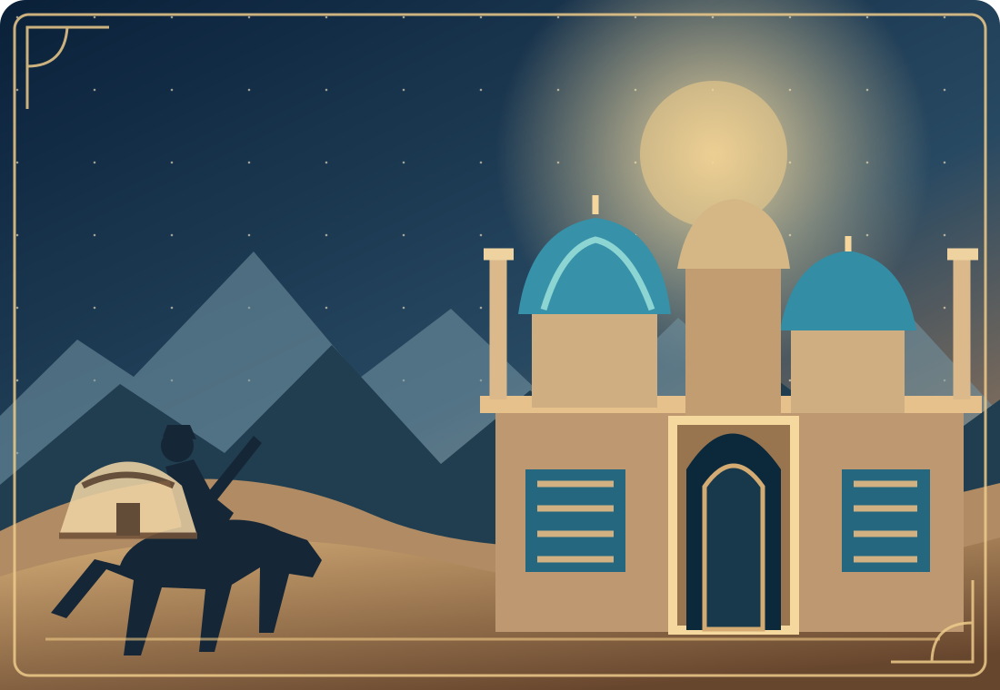

Инфографика
Оқиғалар, тұлғалар мен хронологияны визуализациялау.
HTMLҚұралды ашу →Canva мен Google Forms принципіндегі мұғалім көмекшісі: ҚМЖ, инфографика, тарихи слайд, жұмыс парағы, тест және HTML ойын. Сабақтың тақырыбын енгізіп, материалды өңдеп, дайын файлды жүктеңіз.

Әр құралды онлайн қолданып көріңіз: дайын үлгіні түзетіп, HTML файлын жүктей аласыз. Мұғалімнің жұмысы бір цифрлық ортада.
Оқиғалар, тұлғалар мен хронологияны визуализациялау.
HTMLҚұралды ашу →Тақырып бойынша өңделетін презентация.
HTML / PDFҚұралды ашу →Сабақ кезеңдері мен бағалауға арналған жоспар үлгісі.
HTML / PDFҚұралды ашу →Жазбаша тапсырмалар мен зерттеу сұрақтары.
HTML / PDFҚұралды ашу →Өз сұрақтарыңыздан автоматты бағалайтын тест.
HTMLҚұралды ашу →Браузерде ойналатын тарихи викторина.
HTML GAMEҚұралды ашу →Тарихи қолжазба, көне карта, өрнек, архитектура және сандық материал бір платформада тоғысады. Әр бөлімге авторлық иллюстрация жасалды.
Даланың тарихын заманауи визуалмен көрсетеміз.
Хронология, себеп-салдар, салыстыру.
Тарихи сұрақтарды квест форматына айналдыру.
Тақырыпты өзгертіңіз, құралды таңдаңыз, дайын нәтижені қарап, жүктеп алыңыз. Тіркелу қажет емес.
Бұл — браузерде жұмыс істейтін үлгі құрастырушы. Тарихи фактілерді мұғалім тексеруі тиіс. Жасанды интеллектті пайдалануға төменде боттар берілген.
Сұранымды көшіріп, арнайы тарих ботында пайдаланыңыз. Сайттан тікелей ботқа өтуге болады. Боттардың жауаптары сайтқа автоматты түрде берілмейді.
ҚМЖ, сабақ кезеңдері, дескрипторлар және жұмыс парақтары.
Тарихи деректер, түсіндіру және әдістемелік көмек.
ҰБТ сұрақтары, тест, тарихи контекст, қателерді талдау.
Көрнекі және интерактивті тарихи материал дайындауға уақыт кетеді.
Тарих пәнінің оқу материалдарын бір цифрлық ортада дайындау.
Тарихқа бейімделген үлгілер, визуализация, интерактивті тапсырма, AI-боттарды қолдану.